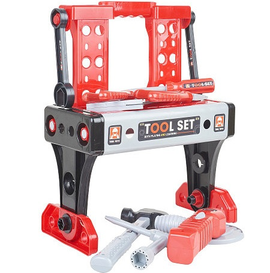

Артикул: 6845705 Цвет: красный, серый Состав: полипропилен 50%, полистирол 50%
Набор детских инструментов от Kari Kids рассчитан на возраст от 3 лет и состоит из 40 деталей. Внутри есть комплектующие, из которых собирается рабочий стол. Набор включает гаечный ключ, ручку для отвертки, сменные насадки для отвертки, штангель-циркуль со встроенным датчиком уровня, баллон, молоток, плоскогубцы, пассатижи и электролобзик. Набор сделан из высокопрочного пластика и упакован в компактный чемоданчик, который очень удобен для хранения или транспортировки игрушки. Ребенок выучит названия самых распространенных инструментов и поймет принцип их работы. Это развивает память, логическое мышление и воображение.
Комплектация: гаечный ключ, ручка для отвертки, сменные насадки для отвертки, штангель-циркуль со встроенным датчиком уровня, баллон, молоток, плоскогубцы, пассатижи, электролобзик
Ваш регион: Ростов-на-Дону
Доставка: самовывоз, курьер
Ближайшая дата: 01.03.2019г.
Стоимость: БЕСПЛАТНО
Информация о технических характеристиках, комплекте поставки, стране изготовления и внешнем виде товара носит справочный характер и основывается на последних доступных сведениях от производителя